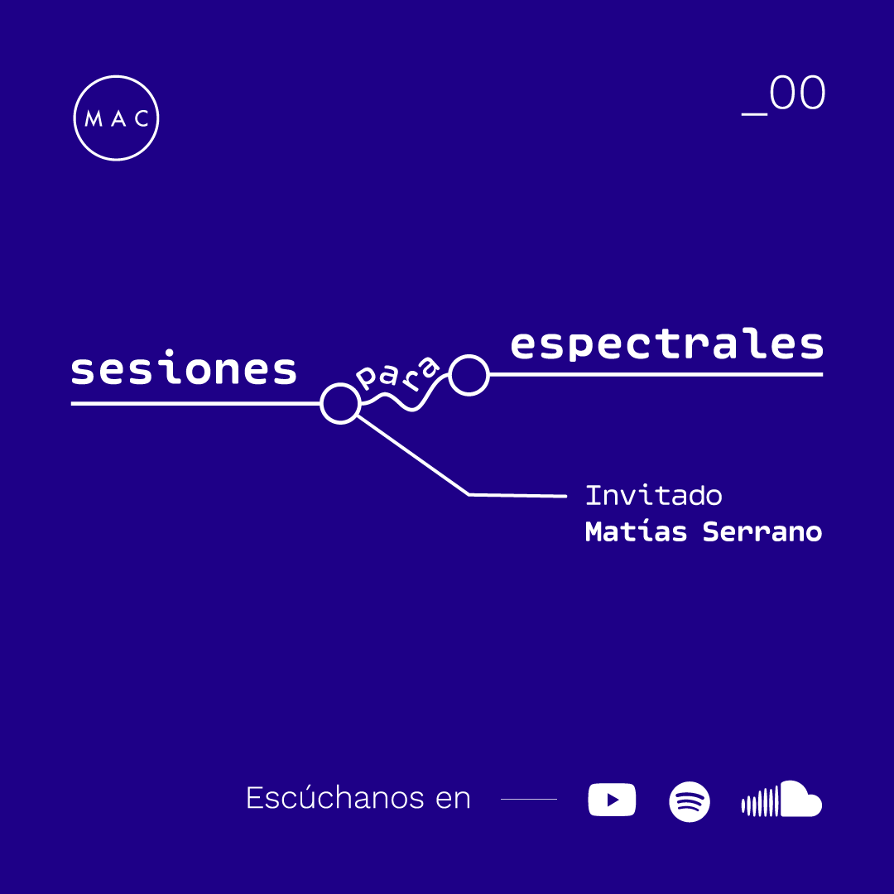
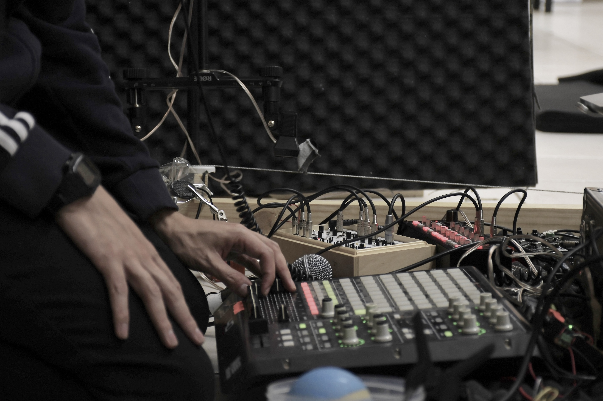
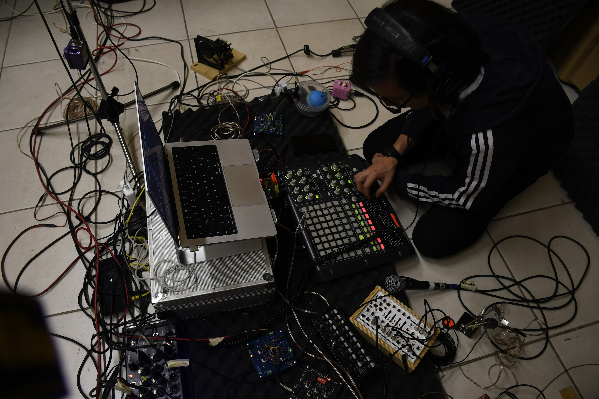
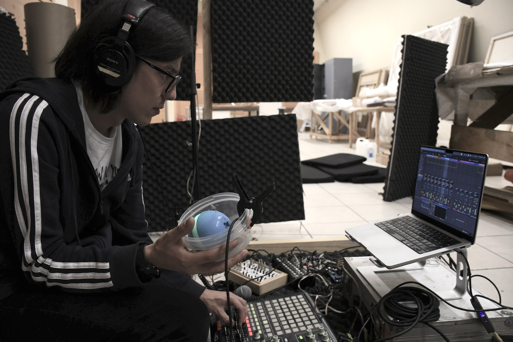

July, 2024


Work created for the podcast sesiones·para·espectrales by Anilla MAC, focused on sound practices in local art. The episode in which I participated explored the concept of "Transduction", and I presented a piece specially created for the occasion called "Campos eléctricos afiebrados" ("Feverish Electric Fields"), generated from building systems made with motors, vibrators, fans, FM signals, transistors, homemade microphones, sequencers and digital processing. Finally, we discussed sound practices in the visual arts.
The title of the piece comes from rearranging a phrase by Graham Harman: "(…)we must maintain a healthy skepticism toward any feverish proposal that every grain of sand or electric field is, in reality, a poet: perhaps it is not." I also don't think that whatever electrons do can be called poetry, but it is nice to dialogue with them and listen to the strange movements they make.
Listen on YouTube
Listen on Spotify


Photos by Clo Rojo